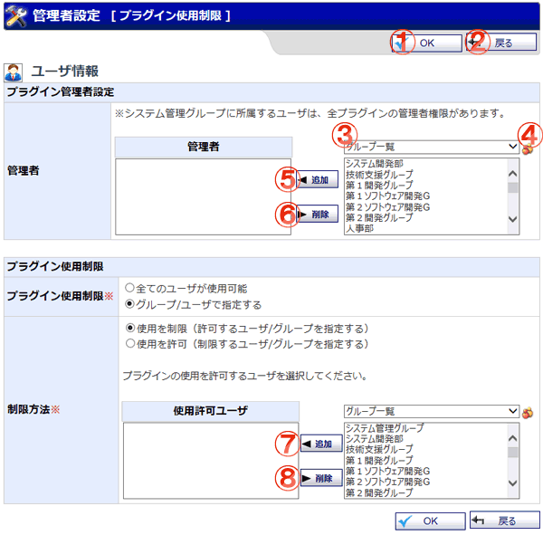

プラグインの使用制限を行う画面です。
プラグインマネージャーとは違いグループ、ユーザ単位で使用制限を行います。

機能説明
OKボタンプラグイン使用制限確認画面へ遷移します。 |
戻るボタンプラグインマネージャー画面へ遷移します。 |
|---|---|
グループコンボ選択したグループに所属するユーザ(「グループ一覧」を選択した場合はグループの一覧)がグループ、ユーザリストに表示されます。 |
グループボタンポップアップでグループ選択画面が開きます。 |
管理者ユーザ追加ボタングループ、ユーザリストで選択したグループまたはユーザを管理者リストへ追加します。 |
管理者ユーザ削除ボタン管理者リストで選択したグループまたはユーザを管理者リストから除外します。 |
使用ユーザ追加ボタングループ、ユーザリストで選択したグループまたはユーザを使用ユーザリストへ追加します。 |
使用ユーザ削除ボタン使用ユーザリストで選択したグループまたはユーザを使用ユーザリストから除外します。 |
表示・入力項目説明
対象プラグイン
対象となるプラグインの名称を表示します。
プラグイン使用制限
プラグインの使用制限形式を選択します。
メンバー
プラグインの使用を許可するグループまたはユーザを選択します。